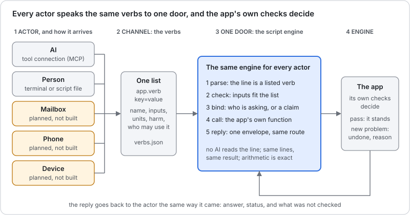

Fast Script User Guide¶
Give the BIM and ERP apps one short command at a time, or a few lines in a file, and get the app's own answer back. The same lines work for you at a terminal and for an AI.
This is the guide to the one door: a small script engine that sits in front of the apps. You write a line such as modeller.lines building=HospitalGarage. The door reads it, checks it against a fixed list of verbs, calls the app's own code, and hands the answer back with what was not checked. There is no AI in the door.

Read the picture from left to right.
- Actor. Whoever sends the line, and the way it arrives. Today that is an AI through a tool connection, or a person at a terminal. A mailbox, a phone and a device are planned and not built yet.
- Channel: the verbs. One list of everything an actor may say. Each verb has a plain description, its inputs, and a harm class. You will find the whole list below.
- One door: the script engine. It parses the line, checks the inputs, binds the line to who is asking, calls the app, and replies. Every actor goes through the same door, so the same line gives the same answer.
- Engine: the app. The app's own checks decide. A change that adds a new problem is undone, and the reason comes back.
What a good answer does not mean
An answer with no problem never means safe, compliant or good. Each answer lists what was not checked, and What is not checked lists it again. A structural engineer has the last word.
New here, with an AI? Connecting an AI to the door is in the AI Proposer Guide. This page is for commands and scripts you write yourself, and for reading what comes back.
Get the door¶
You need Node 18 or newer. These steps were run on Node 18.19.
The Modeller verbs need four files. Make an empty folder, install the browser engine, and download them:
mkdir fastscript && cd fastscript
npm init -y
npm install puppeteer@24
curl -O https://red1oon.github.io/bim-ootb/modeller/tools/edit_cli.js
curl -O https://red1oon.github.io/bim-ootb/modeller/tools/bim_mcp.js
curl -O https://red1oon.github.io/bim-ootb/common/door/door.js
curl -O https://red1oon.github.io/bim-ootb/common/door/verbs.json
Keep all four in the same folder. door.js reads the verb list from verbs.json and runs edit_cli.js, which opens the live Modeller page with no window. If a file is missing, the door says which one and prints its curl line. bim_mcp.js is only for connecting an AI; the commands on this page do not use it.
The Viewer, object and schedule verbs need a full checkout. They are not in the four files. Get the whole bim-ootb repository (git clone https://github.com/red1oon/bim-ootb) and run node common/door/door.js from its top folder instead of node door.js. The verb table says, for each verb, which of the two it needs. A one-file download for the Viewer is not built yet.
Your first command¶
One line, one verb, key=value pairs with no spaces around the =. Ask the HospitalGarage for its grid:
$ node door.js 'modeller.lines building=HospitalGarage'
{"request":"d-mwb4bnoy-2300084-1","verb":"modeller.lines","actor":"human","status":"ok","answer":{"ok":true,"building":"HospitalGarage","edits":[],"ms":19520,"model":{"grid_source":"column-derived","system":"column-framed","material":"RC","mixed":true,"girders":228,"rotation_deg":-2,"frame":"building","lines":[{"id":"gx0","axis":"x","pos":128.131,"world":132.184},{"id":"gx1","axis":"x","pos":129.223,"world":133.277},{"id":"gx2","axis":"x","pos":133.277,"world":137.334},{"id":"gx3","axis":"x","pos":133.795,"world":137.851},{"id":"gx4","axis":"x","pos":134.811,"world":138.868},{"id":"gx5","axis":"x","pos":145.987,"world":150.051},{"id":"gx6","axis":"x","pos":157.163,"world":161.234},{"id":"gx7…
It opens the Modeller and the building, so it takes 10 to 40 seconds. What you see is one line of JSON, an envelope. Only the start is shown here; the grid has more lines than fit. The answer is the app's own, unchanged, inside answer. Here gx5 is at 145.987 m and gx6 at 157.163 m on the building's own grid. status is ok.
Where does the 'request' come from?
Every line gets a request id ("request":"d-…") and is written to a journal before it runs, in ~/.cache/bim_door/journal.jsonl. Send the same id twice and you get the first answer back, so a retry never repeats a change. The door also prints one §DOOR … line on the error stream; this guide shows only the standard output.
One verb for a whole request¶
A request such as "make the bay between gx5 and gx6 13 m wide" is several steps: read the grid, work out the move, try the shift. The verb modeller.widen_bay does all three. Its inputs are the two lines and the width you want:
$ node door.js 'modeller.widen_bay building=HospitalGarage from=gx5 to=gx6 target=13' > widen.json; echo "exit $?"
exit 3
The exit code is the first answer: 0 means ok, 3 means the app gave an answer that is not a plain yes (refused, held or inconclusive), 1 means an error and 2 means a wrong command. Now look inside the file. The whole request comes first, then its two steps, each with its own envelope:
$ grep -o '"request":"[^"]*","verb":"[^"]*","actor":"[^"]*","status":"[^"]*"' widen.json
"request":"d-mwb4c2w9-2300566-1","verb":"modeller.widen_bay","actor":"human","status":"refused"
"request":"d-mwb4c2w9-2300566-1.1","verb":"modeller.lines","actor":"human","status":"ok"
"request":"d-mwb4c2w9-2300566-1.2","verb":"modeller.try_shift","actor":"human","status":"refused"
The first step read the grid. It found the bay now:
$ grep -o '"id":"gx[56]","axis":"x","pos":[0-9.]*' widen.json
"id":"gx5","axis":"x","pos":145.987
"id":"gx6","axis":"x","pos":157.163
So the bay is 157.163 − 145.987 = 11.176 m. To reach 13 m the line gx6, and every line after it, must move 1.824 m. The door worked that out, and the second step passed it on:
$ grep -o '"move":[0-9.]*' widen.json | head -1
"move":1.824
The app tried the shift, checked it, and stopped it:
$ grep -o '"why":"[^"]*"' widen.json | tail -1
"why":"line 2 (modeller.try_shift): stopped: Beam spans over limit: 91 -> 92 (limit 12 m, RC); bay gx5-gx6 newly over the limit: 13 m"
The change was made, judged and undone. Nothing is ever saved. The numbers behind the stop are in the app's report:
$ grep -o '"bay":"gx5-gx6"[^}]*' widen.json
"bay":"gx5-gx6","before":11.176,"after":13,"newly_over":true
The bay went from 11.176 m to 13 m, over this building's 12 m limit for a concrete beam (limit and material come from the building itself). That is the whole story of the Garage request: a 13 m bay needs another column line.
A script: several lines, a named result¶
A script is a text file with one command per line. A line may start with a name and an =, which keeps its answer for the lines below. Anything after -- is a comment. Save this as bay.door:
-- read the grid, then widen the bay between gx5 and gx6 to exactly 12 m
lines = modeller.lines building=HospitalGarage
modeller.try_shift building=HospitalGarage line=gx6 move={12 - (lines.model.lines[gx6].pos - lines.model.lines[gx5].pos)}
Run it with --script:
$ node door.js --script bay.door > bay.json; echo "exit $?"
exit 0
Text inside { } is arithmetic. It may use numbers, + - * /, brackets, and fields of a named result. lines.model.lines[gx6].pos means: in the answer named lines, under model, the entry of lines whose id is gx6, its pos. Only fields the verb declares can be read; any other name is an error that says so.
The arithmetic is exact decimal, not floating point. A computer using floating point gets 12 - 11.176 = 0.8239999999999998. The door gets this:
$ grep -o '"change":{"kind":"[^"]*","grid":"[^"]*","through":"[^"]*","lines":[0-9]*,"delta":[0-9.]*' bay.json
"change":{"kind":"block-shift","grid":"gx6","through":"gx16","lines":11,"delta":0.824
A script runs top to bottom and stops at the first line that is not ok. Here both answer ok:
$ grep -o '"request":"[^"]*","verb":"[^"]*","actor":"[^"]*","status":"[^"]*"' bay.json
"request":"d-mwahro91-2049711-2","verb":"modeller.lines","actor":"human","status":"ok"
"request":"d-mwahs1lf-2049711-3","verb":"modeller.try_shift","actor":"human","status":"ok"
At exactly 12 m the app finds no new problem: the count of beam spans over the limit stays where it was.
$ grep -o '"label":"Beam spans over limit","scope":"[^"]*","state":"JUDGED","before":[0-9]*,"after":[0-9]*,"delta":[0-9]*' bay.json
"label":"Beam spans over limit","scope":"228 walked girders, RC (mixed building)","state":"JUDGED","before":91,"after":91,"delta":0
So the same building, asked for 13 m, is stopped, and asked for 12 m, stands. An ok is not a promise that the building is good: the same list of what is not checked applies.
The line grammar¶
| Part | Rule |
|---|---|
| A command | app.verb key=value key=value, one per line |
| A value with spaces | put it in double quotes: text="a note" |
| A named result | name = app.verb …; later lines read name.field |
| Arithmetic | { … } with numbers, + - * /, brackets and result fields; exact decimals |
| A comment | -- and the rest of the line |
| Units | never written on the line; the verb says metres, hours or days |
| Anything else | not a command: it comes back as a question, not as an action |
The last row is deliberate. Text that matches no verb is never guessed at:
$ node door.js 'please widen the bay'
{"request":"d-mwb7nify-2354956-1","verb":null,"actor":"human","status":"refused","answer":{"question":"I could not read that as a command. A command is app.verb key=value … Which one do you mean? Type !help.","verbs":["modeller.lines","modeller.try_shift","viewer.counts","viewer.clashes","viewer.film_path","viewer.schedule_at","viewer.schedule_compare","modeller.widen_bay","modeller.walk","object.describe","object.read","object.history","object.update","object.attach","object.count","object.list","object.sum","object.group","erp.find","erp.actions","erp.describe","erp.read","erp.list","erp.sum","erp.group","erp.new","erp.complete","erp.void","erp.close","erp.reverse","witness.run","witness.last","legacy.status","legacy.query","erp.column","erp.compare","idempiere.where"]},"why":"not a command: \"please widen the bay\"","notChecked":[],"ops":[],"next":[],"ms":0}
Reading the reply¶
Every line, from every actor, gets the same envelope. Read these in order.
| Field | Meaning |
|---|---|
status |
ok, refused, claim, error or inconclusive. Read this first |
why |
the reason, when the status is not ok |
answer |
the app's own answer, unchanged |
notChecked |
what the check did not cover. Always pass it on |
request, verb, actor |
which line, which verb, who asked |
ops |
what was written, for a verb that writes |
next |
reserved; empty today |
ms |
how long it took |
The five statuses, each from a real run:
ok. The app answered and nothing was held back. The first command on this page is one. Even then, read notChecked.
refused. The app gave an answer that is not a yes. The 13 m request above is one: it was tried, judged and undone, and why says why. A refusal is an answer, not a failure. Text that is not a command is also refused (the question above).
error. The line itself is wrong: a missing input, an unknown verb, a value of the wrong kind. Nothing ran.
$ node door.js 'modeller.lines'
{"request":"d-mwb4l54g-2304751-1","verb":"modeller.lines","actor":"human","status":"error","answer":null,"why":"missing input: building","notChecked":[],"ops":[],"next":[],"ms":1}
claim. The line is understood, but the actor has no proof that allows it, so the door holds it and does not run it. This is the safety rule for an AI, and it comes from the verb, not from the actor. See What is a claim.
$ node door.js --actor ai --request ai-1 'object.update building=Duplex kind=Element uu=abc column=Name value=x'
{"request":"ai-1","verb":"object.update","actor":"ai","status":"claim","answer":null,"why":"actor ai has proof \"local-user\", which allows read/trial verbs; object.update is writes. Held as a claim, not run. A person confirms it with: door.js --confirm ai-1","notChecked":[],"ops":[],"next":[],"ms":1}
inconclusive. The app could not judge, and says so. It is never turned into an ok. Here the Viewer has no clash rule for the pair ARC and ZZZ. This one needs a checkout:
$ node common/door/door.js 'viewer.clashes building=Duplex discA=ARC discB=ZZZ'
{"request":"d-mwb4l594-2304771-1","verb":"viewer.clashes","actor":"human","status":"inconclusive","answer":null,"why":"the Viewer could not answer (exit 1): the Viewer says INCONCLUSIVE: no rule for ARC/ZZZ in clash_rules.json","notChecked":[],"ops":[],"next":[],"ms":7256}
What is a claim¶
Each verb has a harm class: read (changes nothing), trial (a change made on a throwaway copy, judged, never saved), writes, posts or sends. The class is written once, in the verb list, so no actor can talk its way around it.
Each actor has a proof. A person at the terminal is trusted for every class. An AI is trusted for read and trial only: it may look and it may try, but a writes, posts or sends verb from an AI is held as a claim, as the object.update line above was. An actor with no proof at all, such as a mail from an unknown sender, may read and nothing else:
$ node door.js --actor email --request mail-0 'modeller.try_shift building=HospitalGarage line=gx6 move=1.824'
{"request":"mail-0","verb":"modeller.try_shift","actor":"email","status":"claim","answer":null,"why":"actor email has proof \"none\", which allows read verbs; modeller.try_shift is trial. Held as a claim, not run. A person confirms it with: door.js --confirm mail-0","notChecked":[],"ops":[],"next":[],"ms":1}
A held claim is not run, not queued and not lost: it is in the journal, under its request id. The door does not confirm anything on anyone's behalf.
Confirm a claim¶
A person lets a held claim through by its request id, so the line that runs is exactly the line that was proposed. Nobody re-types it. Here a mail asks for a trial move and is held:
$ node door.js --journal claims.jsonl --actor email --request mail-1 'modeller.try_shift building=HospitalGarage line=gx6 move=0.824'
{"request":"mail-1","verb":"modeller.try_shift","actor":"email","status":"claim","answer":null,"why":"actor email has proof \"none\", which allows read verbs; modeller.try_shift is trial. Held as a claim, not run. A person confirms it with: door.js --confirm mail-1","notChecked":[],"ops":[],"next":[],"ms":1}
--claims lists what is being held:
$ node door.js --journal claims.jsonl --claims | grep -o '"actor":"[a-z]*","line":"[^"]*","verb":"[^"]*","harm":"[a-z]*"'
"actor":"email","line":"modeller.try_shift building=HospitalGarage line=gx6 move=0.824","verb":"modeller.try_shift","harm":"trial"
--confirm runs the recorded line, as you, once:
$ node door.js --journal claims.jsonl --confirm mail-1
{"request":"mail-1#confirmed","verb":"modeller.try_shift","actor":"human","status":"ok","answer":{"ok":true,"building":"HospitalGarage","edits":[{"tag":"EDIT_REPORT","version":1,"change":{"kind":"bloc…
The reply is the ordinary one, and it names the claim it confirmed. Asking again runs nothing: the door answers from its record.
$ node door.js --journal claims.jsonl --confirm mail-1 | grep -o '"confirms":"[^"]*"'
"confirms":"mail-1"
Three rules hold. Only a person at the terminal may confirm: --actor ai --confirm … is refused and the claim stays held. The app still decides at the moment of confirming, so a line that has become wrong since it was proposed is refused with the app's reason. And an AI's tool connection has no confirm command at all.
What this does not prove. The door trusts whoever is at the local terminal. An AI that is allowed to run shell commands on your machine could type --confirm itself, just as it could type a line as you. Keep an AI's access to its tool connection if that matters.
Use the door from a script of your own¶
Everything above is door.js, the same file the AI connection uses. From your own program, call it as a command and read its JSON: the exit code (0, 3, 1, 2) says whether to read an answer or a problem, and status says which. --actor human is the default; --actor ai makes the door treat the line as an AI's.
Ask what a thing is: object.describe¶
A verb can also ask the model itself what it holds. object.describe is reflection: it reads the model's own dictionary and says which properties a kind of object has, which child tabs, and which generic methods are legal for it. It reads dictionary rows only; no element is opened. It needs a checkout, and a building whose model carries its own dictionary (the Duplex does).
$ node common/door/door.js 'object.describe building=Duplex kind=Element'
{"request":"d-mwb4lkv7-2305335-1","verb":"object.describe","actor":"human","status":"ok","answer":{"kind":"Element","table":"elements_meta","uu":"3027c2ed-8cb6-5ccb-ae8c-fd7df2eca264","key":"elements_meta_uu","highVolume":true,"properties":[{"name":"guid","label":"GUID","type":"string","mandatory":true,"updateable":false,"key":false,"parent":false,"length":255},{"name":"ifc_class","label":"IFC Class","type":"list","mandatory":false,"updateable":true,"key":false,"parent":false,"length":255,"values":["IfcBeam","IfcCo…
Which methods may an Element use?
$ node common/door/door.js 'object.describe building=Duplex kind=Element' | grep -o '"methods":\[[^]]*\]'
"methods":["read","update","attach","history"]
An unknown kind is an error that lists the kinds the model has, so a wrong guess teaches the right name.
Count things: object.count¶
object.count answers "how many": how many records of a kind the model holds. The Duplex names its rooms as the kind Room. It needs a checkout.
$ node common/door/door.js 'object.count building=Duplex kind=Room'
{"request":"d-mwb4llay-2305379-1","verb":"object.count","actor":"human","status":"ok","answer":{"kind":"Room","table":"model_room","filters":[],"count":5,"population":5,"verdict":"OK","summary":"5 Room"},"why":null,"notChecked":[],"ops":[],"next":[],"ms":206}
Add column=value to narrow the count. The column must be a property of the kind (object.describe lists them), and the answer keeps the population, the number before narrowing:
$ node common/door/door.js 'object.count building=Duplex kind=Room storey="Level 1"'
{"request":"d-mwb4llj9-2305400-1","verb":"object.count","actor":"human","status":"ok","answer":{"kind":"Room","table":"model_room","filters":[{"column":"storey","value":"Level 1"}],"count":2,"population":5,"verdict":"OK","summary":"2 Room where storey = Level 1 (of 5)"},"why":null,"notChecked":[],"ops":[],"next":[],"ms":204}
A column the kind does not have is an error that names it and lists the real ones. It is never read as "no match":
$ node common/door/door.js 'object.count building=Duplex kind=Room floor=1'
{"request":"d-mwb4llrc-2305423-1","verb":"object.count","actor":"human","status":"error","answer":null,"why":"the object engine could not answer (exit 1): kind Room has no property \"floor\" (its properties: guid, type, name, parent_guid, object_type, predefined_type, center_x, center_y, center_z, size_x, size_y, size_z, room_gu…
A model with no room at all does not answer 0. It answers inconclusive, because nothing was counted. A zero you can trust is a narrowed count inside a population that is not empty.
What the walker would place: modeller.walk¶
The Modeller has a walker that places the fittings of one discipline (sprinklers, lights, outlets) by rules measured from real buildings. modeller.walk is a dry run of it: it says what the walker would place and changes nothing. The model file is the same, byte for byte, afterwards, and the answer says so. It needs a checkout. The full reply is long, so this shows its main numbers:
$ node common/door/door.js 'modeller.walk building=Duplex discipline=FP' | grep -o '"rules":"[^"]*"\|"count":[0-9]*,"placed":[0-9]*,"provisional":[0-9]*\|"byClass":{[^}]*}\|"modelUnchanged":[a-z]*'
"rules":"duplex_rules.db"
"count":46,"placed":0,"provisional":46
"byClass":{"IfcFireSuppressionTerminal":45,"IfcAlarm":1}
"modelUnchanged":true
count is everything the walk would place. provisional are positions the walker itself marks as not final, for example a fitting with no ceiling found above it. rules is the rule set the building's class uses: a house walks the residential rules. A walk that places nothing answers inconclusive with the walker's reason.
The dotted form, for people¶
The same questions can be typed as one dotted phrase: where it is, then what to take. It is a shorthand for people at a terminal. It is not a second language: the tool turns the phrase into one door line, shows you that line, and sends only that line through the door. It needs a checkout.
--compile shows the door line and runs nothing:
$ node common/door/dotted.js --compile 'viewer(Duplex).Room.count'
{"dotted":"viewer(Duplex).Room.count","lines":["object.count building=Duplex kind=Room"],"field":"count"}
Without --compile it runs, and value is the field you asked for:
$ node common/door/dotted.js 'viewer(Duplex).Room.count' | grep -o '"value":[0-9]*'
"value":5
There are two shapes, and one verb call per phrase:
| Shape | Example | Becomes the door line |
|---|---|---|
app(model).Kind.measure |
viewer(Duplex).Room.count |
object.count building=Duplex kind=Room |
app(model).Kind[column=value].measure |
viewer(Duplex).Room[storey="Level 1"].count |
object.count building=Duplex kind=Room storey="Level 1" |
app(model).method(inputs).field |
modeller(Duplex).walk(FP).count |
modeller.walk building=Duplex discipline=FP, then reads count |
| the same, inputs by name | viewer(Duplex).schedule_at(day=5).counts.placed |
viewer.schedule_at building=Duplex day=5, then reads counts.placed |
$ node common/door/dotted.js --compile 'viewer(Duplex).Room[storey="Level 1"].count'
{"dotted":"viewer(Duplex).Room[storey=\"Level 1\"].count","lines":["object.count building=Duplex kind=Room storey=\"Level 1\""],"field":"count"}
$ node common/door/dotted.js --compile 'modeller(Duplex).walk(FP).count'
{"dotted":"modeller(Duplex).walk(FP).count","lines":["modeller.walk building=Duplex discipline=FP"],"field":"count"}
$ node common/door/dotted.js --compile 'viewer(Duplex).schedule_at(day=5).counts.placed'
{"dotted":"viewer(Duplex).schedule_at(day=5).counts.placed","lines":["viewer.schedule_at building=Duplex day=5"],"field":"counts.placed"}
Every name comes from the verb list: a method is a verb of that app, a measure is a count verb, a field is one the verb says it returns. A wrong name is an error that lists the right ones:
$ node common/door/dotted.js 'viewer(Duplex).Room.sum'
{"dotted":"viewer(Duplex).Room.sum","error":"unknown measure \"sum\" (measures: count)"}
The door itself does not read the dotted form. Sent raw, it comes back as a question and nothing runs:
$ node common/door/door.js 'viewer(Duplex).Room.count'
{"request":"d-mwb4lmqx-2305537-1","verb":null,"actor":"human","status":"refused","answer":{"question":"I could not read that as a command. A command is app.verb key=value … Which one do you mean? Type !help.","verbs":["modeller.li…
Limits. No arithmetic and no second step inside a phrase; use a script with named results for that. Kinds are read from the Viewer's model, and only the Duplex carries a dictionary today. The dotted form is not offered to an AI: its menu is the verb list, so there is one way for it to be right.
Lists, sums and groups: erp.list, erp.sum, erp.group¶
count answers "how many". Three more read-only verbs answer "which ones", "how much" and "how many of each". They take any kind of the ERP's dictionary (and the same three exist for a building's model as object.list, object.sum, object.group). They need a checkout.
erp.list shows rows. Every column, filter and sort is checked against the dictionary, so a wrong name is an error that lists the real ones. Add column=value to narrow the list. The list shows at most 50 rows unless limit says otherwise (up to 1000), and the answer always carries the total, so a short list is never mistaken for the whole. Page through a long one with offset:
$ node common/door/door.js --list 'erp.list kind=Order docstatus=CO limit=3 columns=DocumentNo,DocStatus,GrandTotal sort=-DocumentNo'
DocumentNo DocStatus GrandTotal
80001 CO 100.7
80001 CO 100.7
800002 CO 2160
shown 3 of 14
erp.sum adds a number column up exactly. Decimals are added as decimals, never as floating point, so money does not drift. erp.group counts the records for each value of a column, most common first:
$ node common/door/door.js --list 'erp.sum kind=Order column=GrandTotal docstatus=CO'
kind: Order
table: C_Order
column: GrandTotal
filters: [{"column":"DocStatus","value":"CO"}]
n: 14
sum: 19505.9
population: 44
verdict: OK
summary: 19505.9 = sum of GrandTotal over 14 Order
$ node common/door/door.js --list 'erp.group kind=Order by=DocStatus'
DocStatus count
IP 22
CO 14
DR 6
CL 2
shown 4 of 4
A kind with no records at all does not answer 0 or an empty list. It answers inconclusive, because nothing was judged.
Create a record: erp.new¶
erp.new makes a record the way the ERP's own window makes it. You name the kind and the columns you know; the engine fills the rest the way the window does (defaults, the choices a partner brings with it, the Document No from the sequence). A column the dictionary does not have is refused and the reply lists the real ones. A mandatory column still empty after that is refused by name, and nothing is written. The reply starts with number: the Document No, which is what you use next.
A Sales or Purchase document needs issotrx=Y or N. A partner or product may be given by name; a name that matches no record, or more than one, is refused. A line names its document by number:
$ rm -f /tmp/fast_guide_new.ops; BIM_OBJECT_OPLOG=/tmp/fast_guide_new.ops node common/door/door.js 'erp.new kind=Order issotrx=Y c_doctypetarget_id=132 c_bpartner_id=112 salesrep_id=101'
{"request":"d-mwb4lnmc-2305608-1","verb":"erp.new","actor":"human","status":"ok","answer":{"number":"50000","kind":"Order","table":"c_order","id":1500004,"docStatus":"DR","given":["IsSOTrx","C_DocTypeTarget_ID","C_BPartner_ID","SalesRep_ID"],"defaulted":52,"record":{"c_order_id":1500004,"ad_client_id":11,"ad_org_id":11,"isactive":"Y","created":null,"createdby":null,"updated":null,"updatedby":null,"issotrx":"Y","documentno":"50000","docstatus":"DR","docaction":"CO","processing":"N","processed":"N","c_doctype_id":0,"c_doctypetarget_id":132,"description":null,"isapproved":"N","iscreditapproved":"N","isdelivered":"N","isinvoiced":"N","isprinted":"N","istransferred":"N","isselected":"N","salesrep_id":101,"dateordered":"2026-11-10 00:00:00","datepromised":"2026-11-10 00:00:00","dateprinted":null,"dateacct":"2026-11-10 00:00:00","c_bpartner_id":112,"c_bpartner_location_id":108,"poreference":null,"isdiscountprinted":"Y","c_currency_id":100,"paymentrule":"P","c_paymentterm_id":105,"invoicerule":"D","deliveryrule":"A","freightcostrule":"I","freightamt":0,"deliveryviarule":"P","m_shipper_id":null,"c_charge_id":null,"chargeamt":0,"priorityrule":"5","totallines":0,"grandtotal":0,"m_warehouse_id":103,"m_pricelist_id":101,"istaxincluded":"N","c_campaign_id":null,"c_project_id":null,"c_activity_id":null,"posted":"N","c_payment_id":null,"c_cashline_id":null,"sendemail":"N","ad_user_id":null,"copyfrom":"N","isselfservice":"N","ad_orgtrx_id":null,"user1_id":null,"user2_id":null,"c_conversiontype_id":114,"bill_bpartner_id":112,"bill_location_id":108,"bill_user_id":null,"pay_bpartner_id":null,"pay_location_id":null,"ref_order_id":null,"isdropship":"N","volume":0,"weight":0,"ordertype":null,"c_pos_id":null,"amounttendered":0,"amountrefunded":0,"link_order_id":null,"m_freightcategory_id":null,"dropship_bpartner_id":null,"dropship_location_id":null,"dropship_user_id":null,"promotioncode":null,"c_ordersource_id":null,"processedon":0,"ispayschedulevalid":"N","c_cashplanline_id":null,"c_order_uu":null,"shippingrateinquiry":"N","ispriviledgedrate":"N","c_opportunity_id":null,"quotationorder_id":null,"c_department_id":null,"c_costcenter_id":null},"ops":[{"op_type":"CRUD_UPDATE","table":"ad_sequence"},{"op_type":"CRUD_CREATE","table":"c_order"}]},"why":null,"notChecked":[],"ops":[{"op_type":"CRUD_UPDATE","table":"ad_sequence"},{"op_type":"CRUD_CREATE","table":"c_order"}],"next":[],"ms":2486}
$ BIM_OBJECT_OPLOG=/tmp/fast_guide_new.ops node common/door/door.js 'erp.new kind=C_OrderLine order=50000 m_product_id=137 qtyentered=2'
{"request":"d-mwb4lplv-2305637-1","verb":"erp.new","actor":"human","status":"ok","answer":{"number":null,"kind":"Sales Order Line","table":"c_orderline","id":120002710,"docStatus":null,"given":["M_Product_ID","QtyEntered","C_Order_ID"],"defaulted":31,"record":{"c_orderline_id":120002710,"ad_client_id":11,"ad_org_id":11,"isactive":"Y","created":null,"createdby":null,"updated":null,"updatedby":null,"c_order_id":1500004,"line":10,"c_bpartner_id":112,"c_bpartner_location_id":108,"dateordered":"2026-11-10 00:00:00","datepromised":"2026-11-10 00:00:00","datedelivered":null,"dateinvoiced":null,"description":null,"m_product_id":137,"m_warehouse_id":103,"c_uom_id":100,"qtyordered":2,"qtyreserved":0,"qtydelivered":0,"qtyinvoiced":0,"m_shipper_id":null,"c_currency_id":100,"pricelist":3,"priceactual":3,"pricelimit":2.7,"linenetamt":6,"discount":0,"freightamt":0,"c_charge_id":null,"c_tax_id":104,"s_resourceassignment_id":null,"ref_orderline_id":null,"m_attributesetinstance_id":0,"isdescription":"N","processed":"N","qtyentered":2,"priceentered":3,"c_project_id":null,"pricecost":0,"qtylostsales":0,"c_projectphase_id":null,"c_projecttask_id":null,"rrstartdate":null,"rramt":0,"c_campaign_id":null,"c_activity_id":null,"user1_id":null,"user2_id":null,"ad_orgtrx_id":null,"link_orderline_id":null,"pp_cost_collector_id":null,"m_promotion_id":null,"c_orderline_uu":null,"createshipment":"N","createproduction":"N","c_department_id":null,"c_costcenter_id":null},"ops":[{"op_type":"CRUD_CREATE","table":"c_orderline"},{"op_type":"CRUD_UPDATE","table":"c_order"}]},"why":null,"notChecked":[],"ops":[{"op_type":"CRUD_CREATE","table":"c_orderline"},{"op_type":"CRUD_UPDATE","table":"c_order"}],"next":[],"ms":2797}
The order is a draft until someone completes it. Because the line was given the order's number, the order's totals follow without a second step: totallines and grandtotal in the record below are the line's amount (6). The list of the order's own lines is not filled in by erp.read.
$ BIM_OBJECT_OPLOG=/tmp/fast_guide_new.ops node common/door/door.js --list 'erp.read kind=Order number=50000'
kind: Order
uu: 1500004
record: {"c_order_id":1500004,"ad_client_id":11,"ad_org_id":11,"isactive":"Y","created":null,"createdby":null,"updated":null,"updatedby":null,"issotrx":"Y","documentno":"50000","docstatus":"DR","docaction":"CO","processing":"N","processed":"N","c_doctype_id":0,"c_doctypetarget_id":132,"description":null,"isapproved":"N","iscreditapproved":"N","isdelivered":"N","isinvoiced":"N","isprinted":"N","istransferred":"N","isselected":"N","salesrep_id":101,"dateordered":"2026-11-10 00:00:00","datepromised":"2026-11-10 00:00:00","dateprinted":null,"dateacct":"2026-11-10 00:00:00","c_bpartner_id":112,"c_bpartner_location_id":108,"poreference":null,"isdiscountprinted":"Y","c_currency_id":100,"paymentrule":"P","c_paymentterm_id":105,"invoicerule":"D","deliveryrule":"A","freightcostrule":"I","freightamt":0,"deliveryviarule":"P","m_shipper_id":null,"c_charge_id":null,"chargeamt":0,"priorityrule":"5","totallines":6,"grandtotal":6,"m_warehouse_id":103,"m_pricelist_id":101,"istaxincluded":"N","c_campaign_id":null,"c_project_id":null,"c_activity_id":null,"posted":"N","c_payment_id":null,"c_cashline_id":null,"sendemail":"N","ad_user_id":null,"copyfrom":"N","isselfservice":"N","ad_orgtrx_id":null,"user1_id":null,"user2_id":null,"c_conversiontype_id":114,"bill_bpartner_id":112,"bill_location_id":108,"bill_user_id":null,"pay_bpartner_id":null,"pay_location_id":null,"ref_order_id":null,"isdropship":"N","volume":0,"weight":0,"ordertype":null,"c_pos_id":null,"amounttendered":0,"amountrefunded":0,"link_order_id":null,"m_freightcategory_id":null,"dropship_bpartner_id":null,"dropship_location_id":null,"dropship_user_id":null,"promotioncode":null,"c_ordersource_id":null,"processedon":0,"ispayschedulevalid":"N","c_cashplanline_id":null,"c_order_uu":null,"shippingrateinquiry":"N","ispriviledgedrate":"N","c_opportunity_id":null,"quotationorder_id":null,"c_department_id":null,"c_costcenter_id":null}
children: [{"kind":"Sales Order Line","rows":[]},{"kind":"Order Tax","rows":[]},{"kind":"Order Payment Schedule","rows":[]},{"kind":"Estimated Landed Cost","rows":[]}]
erp.new is a writes verb. A person at the terminal runs it. An AI's erp.new is held as a claim and nothing is written until a person confirms it (see "What is a claim"). These blocks use a scratch op-log (/tmp/fast_guide_new.ops, emptied first), so running them does not touch your own data.
Choose how the answer is shown, and keep it¶
The reply is the JSON envelope unless you ask otherwise. Three switches show the rows of an answer as something a person or a spreadsheet can read; the envelope is still what the door records:
--list: an aligned table, endingshown N of TOTAL. A reply that is one record showsfield: valuelines.--csv: the rows as CSV (RFC 4180: a cell with a comma, a quote or a new line is quoted; numbers are exactly as the engine returned them).--out FILEwrites the chosen form to a file in the current folder instead of the screen. A line that is refused, held or inconclusive writes no file and says so.
$ node common/door/door.js --csv 'erp.list kind=Order docstatus=CO limit=3 columns=DocumentNo,DocStatus,GrandTotal sort=-DocumentNo'
DocumentNo,DocStatus,GrandTotal
80001,CO,100.7
80001,CO,100.7
800002,CO,2160
In a script, end a line with > file to send that line's answer to a file in the script's folder (>> file adds to it). The form follows the name: .csv is CSV, .json is the envelope, anything else is the list. A path that leaves the script's folder is refused.
These switches live in a fifth file, render.js; put it beside door.js when you use them from a download:
curl -O https://red1oon.github.io/bim-ootb/common/door/render.js
Ask the door: !help¶
Type !help to see the common commands, each as a line you can run. !help erp lists every verb of one app, !help erp.find shows one verb whole (what it does, each input, what it may change, who may run it), and !help all lists everything. Help is generated from the same verb list as the table below, reads nothing, runs nothing and is not recorded in the journal.
$ node common/door/door.js '!help erp.find'
erp.find — Find a document
Find a document by its number, the way a window's Find does (DocumentNo, else Name or Value). Returns every match with its key, DocStatus and DocAction. Nothing is changed. Kinds: any document table of the dictionary (34).
Inputs:
kind (required, string) e.g. Order — The kind of document, as the dictionary names it (an AD_Table with a DocAction column), e.g. "Order". 34 kinds exist; an unknown kind or a table that is not a document is refused naming the reason.
number (required, string) e.g. 50000 — The document number (DocumentNo) as shown in the window; if two documents carry it, name one with id.
Harm: read (reads only)
Who may run it: human, ai
Example: erp.find kind=Order number=50000
For developers: check the twin against legacy¶
These verbs are for the person who keeps the ERP twin equal to the real iDempiere. They need a bim-ootb checkout, and for the first four the legacy test stack running (a docker Postgres and the pilot server) and the iDempiere source beside it. When a part is missing they answer inconclusive and say which part: they never answer an empty list or "same" for something they could not look at.
legacy.status asks whether the stack is up. It starts nothing; when something is down it prints the commands that start it:
$ node common/door/door.js --list 'legacy.status'
verdict: UP
postgres: {"container":"postgres","database":"idempiere_pilot","state":"ready"}
pilot: {"url":"http://localhost:8088/webui/","http":200,"state":"up"}
summary: legacy UP: postgres ready, pilot up
next: []
erp.column answers "who fills this column", from the twin's dictionary and legacy's side by side: the column default, the validation rule, the field default, and the login default (iDempiere puts the IsDefault row of a referenced table into the context at login). When the two sides disagree it says DIFFERENT and which part:
$ node common/door/door.js --list 'erp.column kind=Order column=DocAction'
kind: Order
table: C_Order
column: DocAction
twin: {"found":true,"table":"C_Order","column":"DocAction","reference":28,"mandatory":"Y","updateable":"Y","defaultValue":"CO","validationRule":null,"fieldDefaults":[],"loginDefault":null,"filledBy":"the column default CO"}
legacy: {"found":true,"table":"C_Order","column":"DocAction","reference":28,"mandatory":"Y","updateable":"Y","defaultValue":"CO","validationRule":null,"fieldDefaults":[],"loginDefault":null,"filledBy":"the column default CO"}
differs: []
verdict: SAME
notChecked: []
summary: C_Order.DocAction: SAME; twin fills it by the column default CO; legacy by the column default CO
idempiere.where finds a name in the iDempiere source and answers the file, the line and the line's text, so a claim about legacy behaviour can quote where it comes from. It shows 25 lines unless limit says otherwise and always gives the total; in=callout keeps only files whose path contains that text:
$ node common/door/door.js --list 'idempiere.where symbol=InvoiceRule in=CalloutOrder limit=2'
symbol: InvoiceRule
hits: [{"file":"org.adempiere.base.callout/src/org/compiere/model/CalloutOrder.java","line":50,"text":"*\t\t- InvoiceRule/DeliveryRule/PaymentRule"},{"file":"org.adempiere.base.callout/src/org/compiere/model/CalloutOrder.java","line":131,"text":"mTab.setValue (\"InvoiceRule\", X_C_Order.INVOICERULE_Immediate);"}]
shown: 2
total: 20
files: 1
verdict: OK
summary: InvoiceRule: 20 lines in 1 files (showing 2)
Three more verbs sit beside these. legacy.query table=c_order ad_client_id=11 limit=5 reads rows from a legacy table (read only; the table and every column are checked against legacy's dictionary, and the total is always given). erp.compare kind=Order number=50000 legacy=50981 reads one record on the twin and the matching one on legacy and compares them cell for cell; a cell where legacy is empty and the twin holds a default is labelled NULL-VS-DEFAULT and nothing is said about why. witness.run name=erp_new runs a witness from the tree, keeps its whole log, and answers its own verdict line (PASS, FAIL or INCONCLUSIVE); a witness that prints no verdict line is an error, because an exit code is not evidence, and witness.last reads the last recorded run without running it again.
Viewer questions from a plain download¶
Two Viewer verbs, viewer.counts and viewer.clashes, also work without a checkout. Put two more files beside the four:
curl -O https://red1oon.github.io/bim-ootb/viewer/tools/viewer_verbs.js
curl -O https://red1oon.github.io/bim-ootb/viewer/tools/viewer_driver.js
With no page files on your disk, the tool opens the live Viewer page with the building the site serves, in a hidden browser on the processor, and asks the Viewer's own Find panel. page in the answer says which page was used:
$ node door.js 'viewer.counts building=Duplex' | grep -o '"summary":"[^"]*"\|"page":"[a-z]*"'
"summary":"1119 elements: MEP 904, ARC 196, STR 19"
"page":"live"
It takes about half a minute. The numbers are the served building's, so they can differ from an older copy in a checkout. The schedule verbs, viewer.film_path, the object verbs and modeller.walk still need a checkout; the table says which.
The verbs¶
This table is generated from the vocabulary file (common/door/verbs.json) and a test checks that it matches, verb for verb. It is the same list the AI's tool menu is built from. Harm is explained above; Needs says which of the two downloads runs the verb.
| Verb | What it does | Inputs | Harm | Who may use it | Needs |
|---|---|---|---|---|---|
modeller.lines |
Read the grid | building |
read | human, ai | the 4-file download |
modeller.try_shift |
Try shifting a grid line | building, line, move (metres) |
trial | human, ai | the 4-file download |
viewer.counts |
Count elements | building, by (optional) |
read | human, ai | the 4 files + the 2 Viewer files |
viewer.clashes |
List clashes between two disciplines | building, discA, discB |
read | human, ai | the 4 files + the 2 Viewer files |
viewer.film_path |
Film path visibility | db, path (optional) |
read | human, ai | a bim-ootb checkout |
viewer.schedule_at |
Schedule state at a day | building, day (day number) |
read | human, ai | a bim-ootb checkout |
viewer.schedule_compare |
Schedule engine against its reference | building, shift_hours (hours) (optional) |
read | human, ai | a bim-ootb checkout |
modeller.widen_bay |
Widen a bay to a target width | building, from, to, target (metres) |
trial | human, ai | the 4-file download |
modeller.walk |
What the walker would place | building, discipline |
read | human, ai | a bim-ootb checkout |
object.describe |
Describe an object kind | building, kind, uu (optional) |
read | human, ai | a bim-ootb checkout |
object.read |
Read an object | building, kind, uu |
read | human, ai | a bim-ootb checkout |
object.history |
History of an object | building, kind, uu |
read | human, ai | a bim-ootb checkout |
object.update |
Change one property of an object | building, kind, uu, column, value |
writes | human, ai | a bim-ootb checkout |
object.attach |
Attach a file or note to an object | building, kind, uu, file (optional), text (optional) |
writes | human, ai | a bim-ootb checkout |
object.count |
Count the records of a kind | building, kind, further column=value filters (optional) |
read | human, ai | a bim-ootb checkout |
object.list |
List records of a kind | building, kind, columns (optional), sort (optional), limit (optional), offset (optional), further column=value filters (optional) |
read | human, ai | a bim-ootb checkout |
object.sum |
Add up a column | building, kind, column, further column=value filters (optional) |
read | human, ai | a bim-ootb checkout |
object.group |
Count by a column | building, kind, by, further column=value filters (optional) |
read | human, ai | a bim-ootb checkout |
erp.find |
Find a document | kind, number |
read | human, ai | a bim-ootb checkout |
erp.actions |
What can be done to a document | kind, id (optional), number (optional), role (optional) |
read | human, ai | a bim-ootb checkout |
erp.describe |
Describe a kind of ERP record | kind |
read | human, ai | a bim-ootb checkout |
erp.read |
Read an ERP record | kind, id (optional), number (optional) |
read | human, ai | a bim-ootb checkout |
erp.list |
List records | kind, columns (optional), sort (optional), limit (optional), offset (optional), further column=value filters (optional) |
read | human, ai | a bim-ootb checkout |
erp.sum |
Add up a column | kind, column, further column=value filters (optional) |
read | human, ai | a bim-ootb checkout |
erp.group |
Count by a column | kind, by, further column=value filters (optional) |
read | human, ai | a bim-ootb checkout |
erp.new |
Create a record | kind, further column=value filters (optional) |
writes | human, ai | a bim-ootb checkout |
erp.complete |
Complete a document | kind, id (optional), number (optional), role (optional) |
posts | human, ai | a bim-ootb checkout |
erp.void |
Void a document | kind, id (optional), number (optional), role (optional) |
writes | human, ai | a bim-ootb checkout |
erp.close |
Close a document | kind, id (optional), number (optional), role (optional) |
writes | human, ai | a bim-ootb checkout |
erp.reverse |
Reverse - Correct a document | kind, id (optional), number (optional), role (optional) |
posts | human, ai | a bim-ootb checkout |
witness.run |
Run a witness and read its verdict | name |
trial | human, ai | a bim-ootb checkout |
witness.last |
Read the last recorded witness run | name |
read | human, ai | a bim-ootb checkout |
legacy.status |
Is the legacy test stack up | none | read | human, ai | a bim-ootb checkout |
legacy.query |
Read rows of a legacy table | table, columns (optional), sort (optional), limit (optional), further column=value filters (optional) |
read | human, ai | a bim-ootb checkout |
erp.column |
Who fills a column: twin and legacy side by side | kind, column |
read | human, ai | a bim-ootb checkout |
erp.compare |
Compare one record on the twin and on legacy | kind, number, legacy (optional) |
read | human, ai | a bim-ootb checkout |
idempiere.where |
Find a name in the iDempiere source | symbol, in (optional), limit (optional) |
read | human, ai | a bim-ootb checkout |
Coverage today. The list is small on purpose: 37 verbs cover the Modeller's grid edits and its walker, a few Viewer questions, the schedule, generic object reading, counting and writing, and the first ERP document verbs. The Viewer has 64 actions a person can press, and the door offers 5 Viewer verbs. The ERP has 1157 documents and processes, and the door offers 14 ERP verbs. So this is a start, not the whole menu.
What is not checked¶
A reply lists what its check did not cover. For the Modeller's edit report the list is:
$ grep -o '"notChecked":\[[^]]*\]' widen.json | tail -1
"notChecked":["duplicate ids","elements changed outside the edit's own list","floating or unsupported elements","grid lines placed on top of each other","invalid coordinates","real beams: only girders walked from columns are span-checked","unknown element types","wrong units or absurd sizes, unless they hit something","zero-size elements","load capacity","beam and column rules (Regulatory Report only)"]
The same words apply to any answer: overlaps are bounding boxes first, a check covers only what moved, and load capacity is never checked. A reply with no red never means safe.
Troubleshooting¶
| What you see | What to do |
|---|---|
edit_cli is not at … |
One of the four files is missing. The message prints the curl line |
puppeteer not found |
Run npm install puppeteer@24 in the same folder |
unknown verb |
The message lists every verb. Check the spelling against the table |
missing input: … |
The verb needs that key. The table lists the inputs |
The Viewer tools need a bim-ootb checkout |
Run it as node common/door/door.js from a full checkout |
exit 1 with a Chrome message |
Chrome's system libraries are missing on Linux. Puppeteer's troubleshooting page lists them |
Limits to plan for. Each Modeller call opens the whole building: about 10 to 40 seconds on the HospitalGarage. This is a measuring tool, not a service with uptime. A script with several Modeller lines opens the building once per line.
How this page stays true¶
Every command in a grey block above was run, and the output under it is what the command printed. A test, W-FAST-SCRIPT-GUIDE in the bim-ootb repository, runs them again from a clean four-file download, checks every number on this page against the runs, and checks that the verb table equals verbs.json. If a number here goes stale, that test fails.
Related: the AI Proposer Guide (connect an AI to the same door, and what an AI did with the checks), and the Modeller guide.